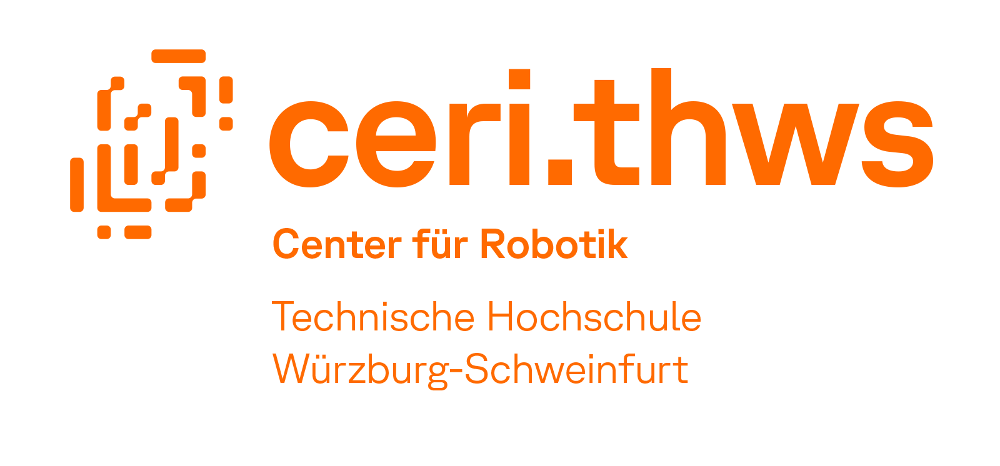

<script>
//https://docs.github.com/de/rest/git/trees?apiVersion=2022-11-28
//ml-01.04.2025-1507

async function gitget() {
let url = 'https://api.github.com/repos/git-ceri/git-ceri.github.io/git/trees/main';

let data = fetch(url)
.then(res => {return res.json();})
.catch(err => console.log(err));

const data_done = await data;

document.write('<a href="https://robotik.thws.de/forschung/projekte/">');
document.write('<a>');
document.write('<div id="box1" style="padding-left: 175px;">');
document.write('<h1>Projects</h1>');

for (let i = 0; i < data_done.tree.length; i++) {
  	//console.log('Element ',i,': ', data2.tree[i].path);
    let p_name = data_done.tree[i].path;
    if (p_name == "index.html"){
    		//pass
    } else if (p_name == "static") {
    		//pass
    } else if (p_name == ".gitignore") {
    		//pass
    } else if (p_name == "KOPRO-HRI23") {
    		//pass
    } else if (p_name == "KOPRO-HRI24A) {
    		//pass
    } else if (p_name == "KOPRO-HRI24B") {
    		//pass
    } else if (p_name == "KOPRO-HRI25A") {
    		//pass
    } else if (p_name == "KOPRO-HRI25B") {
    		//pass
    } else if (p_name == "KOPRO-ICAR23") {
    		//pass
    } else if (p_name == "KOPRO-IEEESW24") {
    		//pass
    } else if (p_name == "KOPRO-MDPI25") {
    		//pass
    } else {
    		document.write('<a href="https://git-ceri.github.io/' + p_name + '/">',p_name + '</a><br>');
    } //ende if
} //ende for


//document.write('<a href="https://git-ceri.github.io/' + data_done.tree[0].path + '/">',data_done.tree[0].path + '</a>'); //debug
document.write("<p>This is an automatically generated listing of subpages.<br> Maybe not all links work yet.</p>");
document.write('</div>');
} //end function


gitget();
</script>
